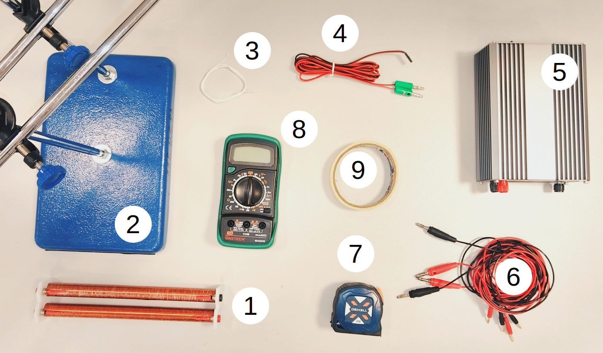
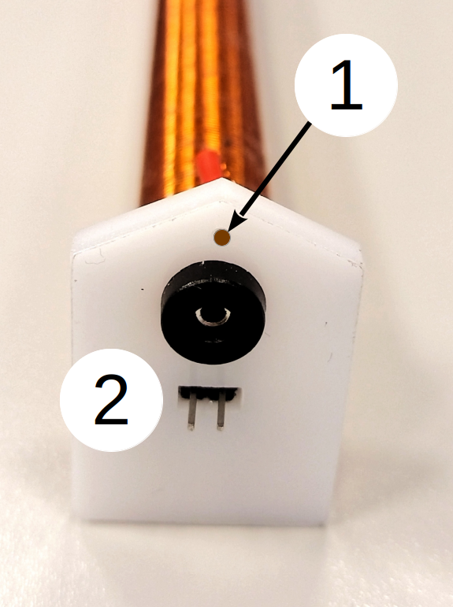
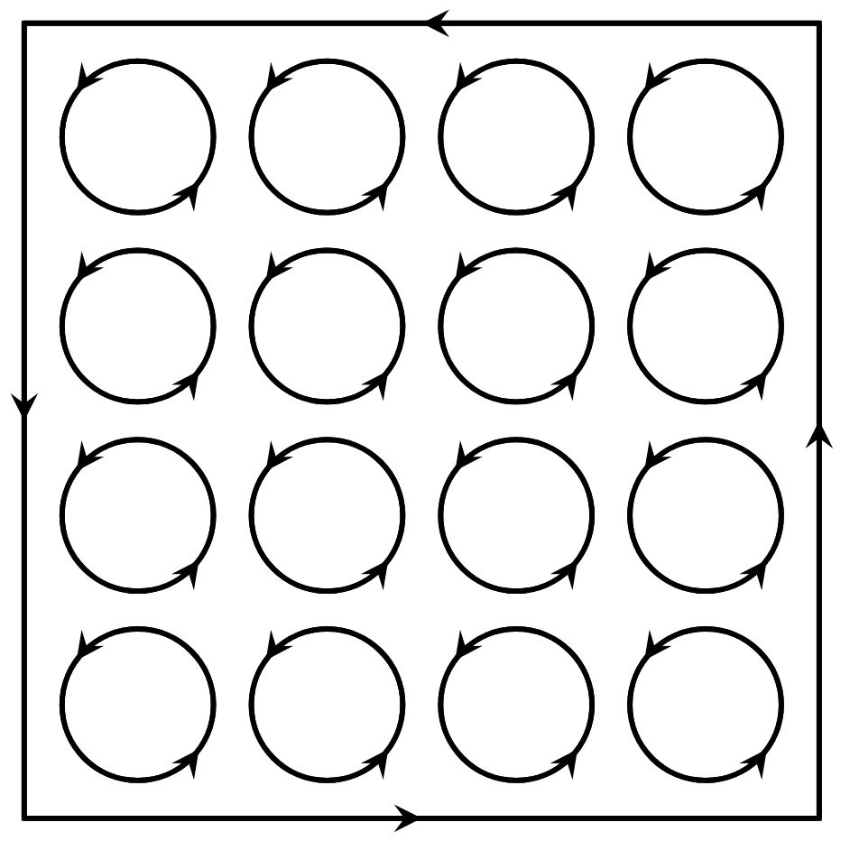
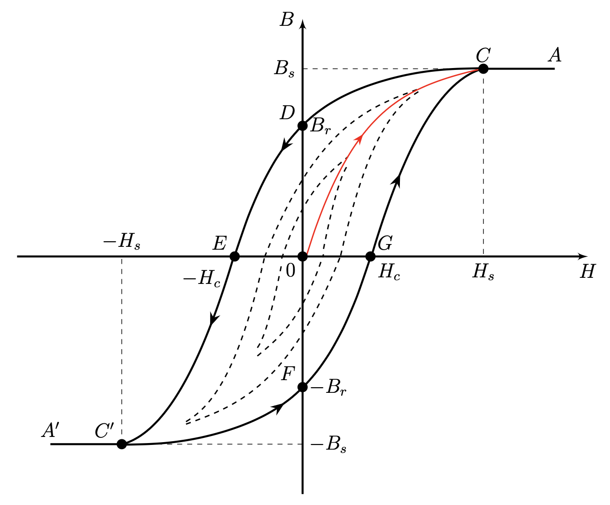
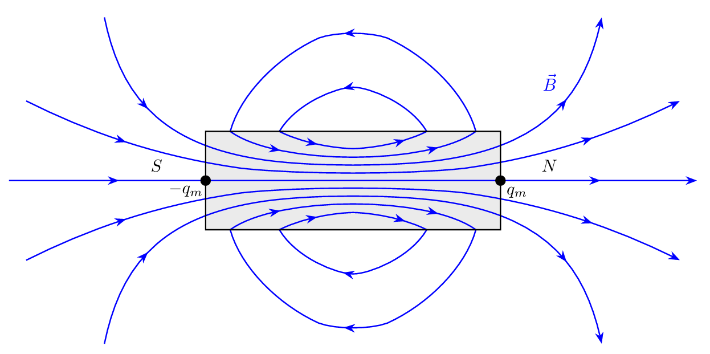
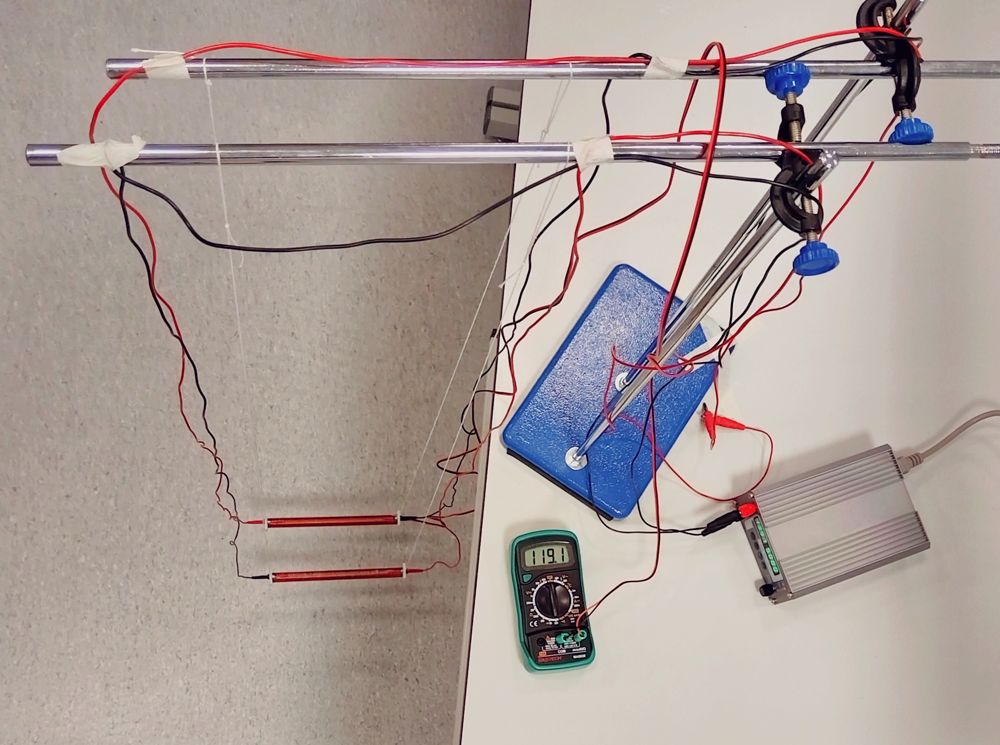
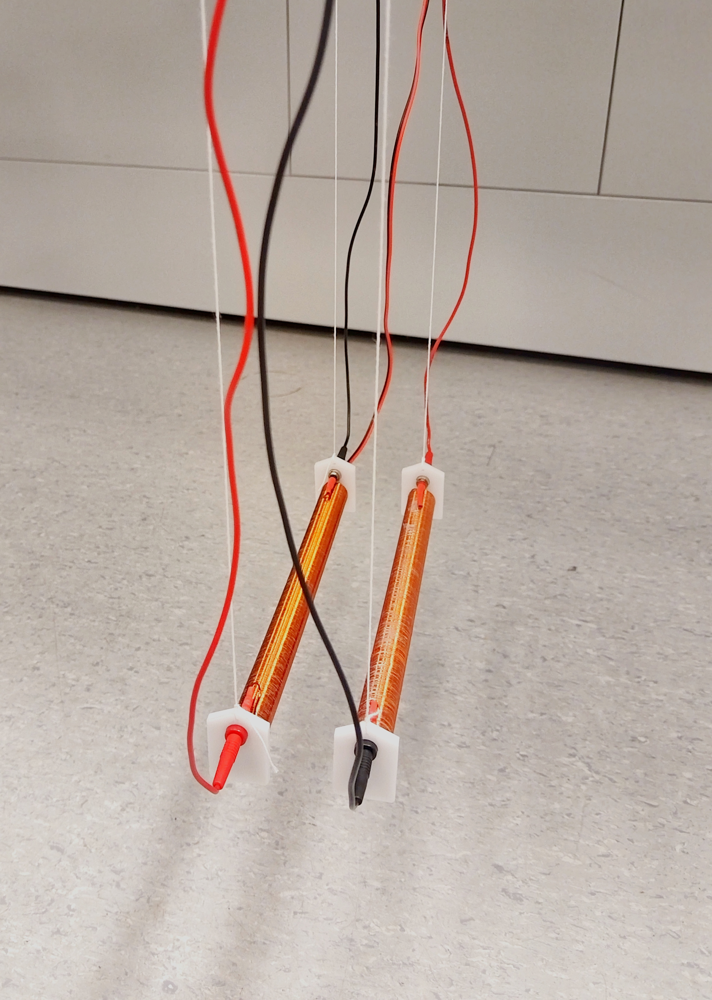
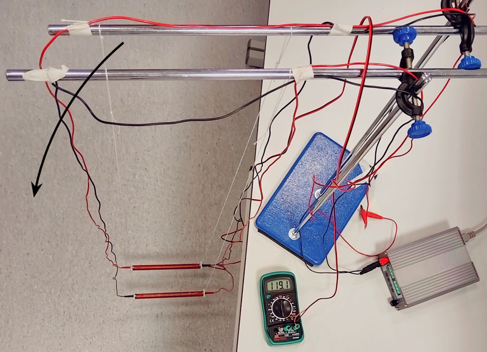
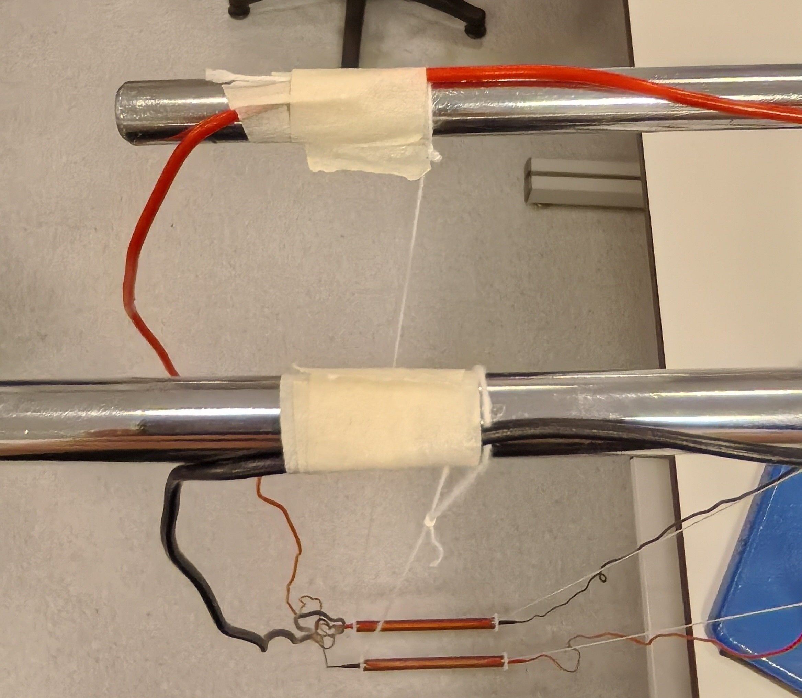
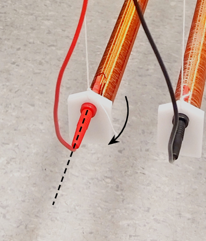

X26 (2026) — English translation
Rice. 1. Photo of equipment

Two long identical solenoids each with mass $m=(170 \pm 2)~г$ with single-layer winding and a ferromagnetic core with length $l=(19.6\pm 0.1)~см$ and cross-sectional area $S=(1.08\pm 0.02)~см^2$. One of the solenoids contains a thermistor for measuring core temperature. Tripod with two rods and two crossbars. The tripod must be secured with a clamp; the points of contact between the clamp and the table must be lined with provided pieces of cardboard to avoid damage to the table. Thread (can be additionally requested without restrictions from the audience attendant) with scissors. Wire for the thermistor (with green tips). They can only be connected to a multimeter in ohmmeter mode. Accidental connection to the power source may damage the thermistor. Power supply with current and voltage indicator. Connecting wires. Tape measure and ruler $50~см$ long. Multimeter in ohmmeter mode. Masking tape.
In Fig. 2 are marked: – Hole for attaching the solenoid to the thread – Thermistor leads. When connecting the wire, do not put pressure on the terminals! The resistance of the thermistor depends linearly on temperature: \[R=R_0(1+\alpha t),\] where $R_0=101~Ом$, $\alpha=0.00377~{{}^{\circ}\mathrm C}^{-1}$, and $t$ is the temperature of the thermistor in degrees Celsius ${}^\circ\mathrm C$. Be careful when handling the solenoid: do not shake it, turn it over, drop it or put too much pressure on its elements! The solenoid body and core are very fragile; in the event of a breakdown, the solenoid cannot be replaced, and further measurements are IMPOSSIBLE! Do not touch the solenoid winding if it is heated to a high temperature! Touch only its ends. At the end of the experiment, you must wrap the wires back into the ties to submit the work! Wires can only be removed from the connectors by holding the plug, and not the wire itself, otherwise this may lead to the plug being torn off. Magnetic constant $\mu_0 = 4\pi\cdot 10^{-7}~{Гн}/{м}$. Rice. 2. Solenoid end
In Fig. 2 are marked: – Hole for attaching the solenoid to the thread – Thermistor leads. When connecting the wire, do not put pressure on the terminals! The thermistor resistance linearly depends on temperature: \[R=R_0(1+\alpha t),\] where $R_0=101~Ом$, $\alpha=0.00377~{{}^{\circ}\mathrm C}^{-1}$, and $t$ is the temperature of the thermistor in degrees Celsius ${}^\circ\mathrm C$. Be careful when handling the solenoid: do not shake it, turn it over, drop it or put too much pressure on its elements! The solenoid body and core are very fragile; in the event of a breakdown, the solenoid cannot be replaced, and further measurements are IMPOSSIBLE! Do not touch the solenoid winding if it is heated to a high temperature! Touch only its ends. At the end of the experiment, you must wrap the wires back into the ties to submit the work! Wires can only be removed from the connectors by holding the plug, and not the wire itself, otherwise this may lead to the plug being torn off. Magnetic constant $\mu_0 = 4\pi\cdot 10^{-7}~{Гн}/{м}$.
Magnetic constant $\mu_0 = 4\pi\cdot 10^{-7}~{Гн}/{м}$.
Rice. 2. Solenoid end

Some substances in a magnetic field become magnetized, i.e. themselves become sources of magnetic fields. Such substances are called magnets. When a magnet is magnetized, the arrangement of molecular currents becomes partially or completely ordered. Therefore, a magnetized magnet can be represented as a system of tiny oriented currents (see Fig. 3). These currents form a certain surface current, which gives the magnet its magnetic properties. Let us recall that magnetic permeability $\mu$ is a coefficient characterizing the relationship between magnetic induction $\vec{B}$ and magnetic field strength $\vec{H}$ in a substance:\[\vec{B} = \mu \mu_0 \vec{H}.\] Substances capable of being strongly magnetized are called ferromagnets. Magnetic permeability of ferromagnets $\mu \gg 1$. Rice. 3. Molecular currents in a magnet
Some substances in a magnetic field become magnetized, i.e. themselves become sources of magnetic fields. Such substances are called magnets. When a magnet is magnetized, the arrangement of molecular currents becomes partially or completely ordered. Therefore, a magnetized magnet can be represented as a system of tiny oriented currents (see Fig. 3). These currents form a certain surface current, which gives the magnet its magnetic properties. Let us recall that magnetic permeability $\mu$ is a coefficient characterizing the relationship between magnetic induction $\vec{B}$ and magnetic field strength $\vec{H}$ in a substance:\[\vec{B} = \mu \mu_0 \vec{H}.\] Substances that can be strongly magnetized are called ferromagnets. Magnetic permeability of ferromagnets $\mu \gg 1$.
When a magnet is magnetized, the arrangement of molecular currents becomes partially or completely ordered. Therefore, a magnetized magnet can be represented as a system of tiny oriented currents (see Fig. 3). These currents form a certain surface current, which gives the magnet its magnetic properties.
Let us recall that magnetic permeability $\mu$ is a coefficient characterizing the relationship between magnetic induction $\vec{B}$ and magnetic field strength $\vec{H}$ in a substance:\[\vec{B} = \mu \mu_0 \vec{H}.\]
Substances that can be strongly magnetized are called ferromagnets. Magnetic permeability of ferromagnets $\mu \gg 1$.
Rice. 3. Molecular currents in a magnet

A demagnetized ferromagnet in a field changes the induction $B$ along the curve $OCA$. At $H=H_s$ saturation of $B_s$ is reached, after which the increase in $H$ has almost no effect on $B$. As $H$ decreases from the point $A$, the induction follows the curve $ACD$ and at $H=0$ the residual induction $B_r$ remains. It arises because, during demagnetization, molecular currents do not return completely to their original state, in which they mutually compensate each other. As a result, some magnetization remains in the sample, directed in the same way as during saturation. To eliminate it, it is necessary to apply an external magnetic field of the opposite direction with intensity $H_c$, which is called coercive force. At $H=-H_s$ at point $C'$ saturation $-B_s$ occurs. The value $H_s$ is called saturation voltage. Rice. 4. Ferromagnetic hysteresis loop
A demagnetized ferromagnet in a field changes the induction $B$ along the curve $OCA$. At $H=H_s$ saturation is reached at $B_s$, after which the increase in $H$ has almost no effect on $B$. As $H$ decreases from the point $A$, the induction follows the curve $ACD$ and at $H=0$ the residual induction $B_r$ remains. It arises because, during demagnetization, molecular currents do not return completely to their original state, in which they mutually compensate each other. As a result, some magnetization remains in the sample, directed in the same way as during saturation. To eliminate it, it is necessary to apply an external magnetic field of the opposite direction with a intensity $H_c$, which is called coercive force. At $H=-H_s$ at point $C'$ saturation $-B_s$ occurs. The quantity $H_s$ is called saturation voltage.
When $H$ decreases from the point $A$, the induction follows the curve $ACD$ and at $H=0$ the residual induction $B_r$ remains. It arises because, during demagnetization, molecular currents do not return completely to their original state, in which they mutually compensate each other. As a result, some magnetization remains in the sample, directed in the same way as during saturation. To eliminate it, it is necessary to apply an external magnetic field of the opposite direction with a intensity $H_c$, which is called coercive force.
At $H=-H_s$ at point $C'$ saturation $-B_s$ occurs. The value $H_s$ is called saturation voltage.

When the field strength $H$ changes in the section $CDEC'FGC$, the magnetization reversal curve describes a loop called a magnetic hysteresis loop. The hysteresis loop we considered is limiting, that is, when the sample is remagnetized, saturation induction $B_{s}$ is achieved. Any loop that occurs when the field changes in the range from $-H_{0}$ to $H_{0}$, where $H_{0} < H_{s}$, is not limiting (all internal loops in Fig. 4).
Similar to an electric dipole, a magnetic dipole can be represented as two magnetic charges $+q_m$ and $-q_m$ located at a certain distance. Magnetic charges have not been experimentally detected, and they are used only as a convenient model for calculations. An example of a magnetic dipole is a solenoid, where the “magnetic charges” are concentrated at the ends (see Fig. 5). If the solenoid is long enough, then outside the solenoid the field is almost equivalent to the field from two point magnetic charges at its ends. The flux through the solenoid core is equal to the flux created by each of the magnetic charges: \[\mu_0 q_{m} = \oint\limits_{\Pi_\text{core}} (\vec{B} \cdot \,\mathrm d\vec{S}).\] Fig. 5. The simplest example of a magnetic dipole
Similar to an electric dipole, a magnetic dipole can be represented as two magnetic charges $+q_m$ and $-q_m$, located at a certain distance. Magnetic charges have not been experimentally detected, and they are used only as a convenient model for calculations. An example of a magnetic dipole is a solenoid, where the “magnetic charges” are concentrated at the ends (see Fig. 5). If the solenoid is long enough, then outside the solenoid the field is almost equivalent to the field from two point magnetic charges at its ends. The flux through the solenoid core is equal to the flux created by each of the magnetic charges: \[\mu_0 q_{m} = \oint\limits_{\Pi_\text{core}} (\vec{B} \cdot \,\mathrm d\vec{S}).\]
If the solenoid is long enough, then outside the solenoid the field is almost equivalent to the field from two point magnetic charges at its ends. The flux through the solenoid core is equal to the flux created by each of the magnetic charges: \[\mu_0 q_{m} = \oint\limits_{\Pi_\text{core}} (\vec{B} \cdot \,\mathrm d\vec{S}).\]

A single magnetic charge $q_m$ creates at a distance $r$ a field equal to:\[B(r) = \dfrac{\mu_0 q_m}{4\pi r^2}.\]The force of interaction between two magnetic charges $q_{m1}$, $q_{m2}$, located at a distance $r$ from each other, is equal to:\[F = \dfrac{\mu_0 q_{m1} q_{m2}}{4\pi r^2}.\]
Assemble the installation shown in Fig. 6. Use the maximum suspension length (solenoids should hang a short distance above the floor). The distance between the axes of the solenoids should be equal to $(5.0\pm0.1)~см$. Clearly check that: The crossbars are parallel to each other and at the same height. The solenoids are located parallel to each other, are at the same height and are not offset relative to each other, and the distance between them coincides with the distance between the crossbars. The distance between the suspension points to the crossbar coincides with the distance between the suspension points to the ends of the solenoid. Show in the picture on your answer sheet how you do this.
Show in the picture on your answer sheet how you do this.
Make final adjustments only after connecting the wires, as they can affect the position of the solenoids. Connect the wires only after hanging the solenoids to avoid twisting the wires and threads. The distance between the crossbars can be changed by rotating them simultaneously relative to the tripod (see Fig. 7a). IMPORTANT! The wires have bending elasticity, which creates an additional moment of force on the solenoids. It is normal that after adjusting the gimbal to the crossbars, the solenoids will not be parallel to each other. To align them: – Route the wires along the bars near the suspension points, securing them horizontally with several layers of masking tape (see Fig. 7b). – Make sure that the wires do not twist around the thread, do not twist with each other, and do not come into contact with other objects (for example, a table). – You can carefully rotate the wire tips inserted into the solenoid around its axis to change the parasitic torque on the wire side (see Fig. 7c).





Errors need to be assessed only in Part A of this problem. Please note that measurements in part C take a long time!
Equipment breakdown if you act contrary to the instructions of the conditions will lead to your disqualification from the tour!
After assembling the setup, invite the audience member to take a photo of your setup.
The photo should show:
The entire installation must be secured and cannot be supported by hands!
Attention! In case of violation of the order of assembly of the installation and recognition of the installation as unsuitable for measurements or absence of photographs, all points related to measurements and data processing WILL BE ASSESSED WITH 0 POINTS!
Since the magnetic permeability of the solenoid core depends on temperature, try to keep the solenoids' temperature within $10~{}^\circ\mathrm C$ of room temperature in your measurements.
The hysteresis is quite small, but its contribution can be estimated.
To improve measurement accuracy, use linearization, which does not require knowledge of the value $x_0$.
Attention! In this part, the installation is much more sensitive to the parallelism and horizontality of the suspended solenoids. Please be careful when adjusting. If you change the direction of current flow in one of the solenoids, they will begin to attract each other. The distance between the axes of the solenoids should be equal to $4~см$ to $6~см$. In this part of the problem, you can neglect the interaction of like magnetic charges and take into account only the attraction of two pairs of charges.
If you change the direction of current flow in one of the solenoids, they will begin to attract each other. The distance between the axes of the solenoids should be equal to $4~см$ to $6~см$.
In this part of the problem, you can neglect the interaction of like magnetic charges and take into account only the attraction of two pairs of charges.
Let's solve a theoretical problem:
In this part of the problem, the dependence of the magnetic permeability of the issued cores on temperature is studied. If a magnet is heated to a high enough temperature, called the Curie temperature, its magnetic permeability drops and it loses its magnetic properties. The dependence of the magnetization of ferromagnets on temperature below the Curie temperature is described by Bloch's law:\[\mu(T)=\mu(0)\left(1-(T/T_c)^{{3}/{2}}\right),\]where $\mu(0)$ is the maximum value of the magnetic permeability of the ferromagnet at $T=0~К$, $T_c$ is the temperature The curie of a given ferromagnet.
If a magnet is heated to a high enough temperature, called the Curie temperature, its magnetic permeability drops and it loses its magnetic properties. The dependence of the magnetization of ferromagnets on temperature below the Curie temperature is described by Bloch's law:\[\mu(T)=\mu(0)\left(1-(T/T_c)^{{3}/{2}}\right),\]where $\mu(0)$ is the maximum value of the magnetic permeability of the ferromagnet at $T=0~К$, $T_c$ is the temperature The curie of a given ferromagnet.
Attention! The issued cores have low thermal conductivity. You can consider the core temperature to be equal to the thermocouple temperature by maintaining the corresponding constant thermocouple temperature for at least 10 minutes.
Source: https://pho.rs/p/4765